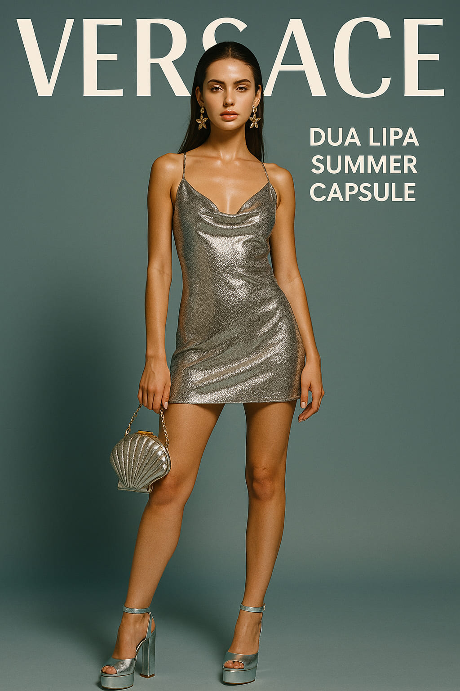

Dua Lipa x Versace: The Summer Capsule That Mixes Y2K Fantasy with Beach Power
Drop day is here: Donatella Versace and Dua Lipa have launched a capsule that merges nostalgia, stardom, and high-summer sensuality—all soaked in glitter and pop attitude.
June 6 marks the official launch of the new Dua Lipa x Versace Summer 2025 Capsule, and it’s already igniting timelines and storefronts alike. Released globally both online and in select Versace boutiques, the collection blurs the line between pop princess and Mediterranean power goddess.
“We designed for women who want to feel like icons, not just look like them.” — Donatella Versace
What’s in the Capsule
The 38-piece collection includes body-hugging dresses, metallic swimwear, chainmail halters, low-rise satin skirts, and one instantly viral accessory: the *mermaid micro-bag*—a shell-shaped clutch in holographic silver. The palette runs from deep aquamarine to sorbet pink, punctuated with gold hardware and starfish motifs.
- Asymmetric satin mini dresses with ruched detailing
- Crystal mesh tank tops with embroidered "Dua" signature
- Platform heels in candy gloss finishes
- One-piece swimsuits with chain straps and low backs

Y2K reloaded: Dua’s capsule swims between nostalgia and control.
The Aesthetic Strategy
This isn’t just merch—it’s a mood. Dua Lipa has always balanced retro fantasy with modern edge, and this collection crystallizes that identity into wearable flash. From Milan to Ibiza, it’s clear the pieces were designed for *moments*: Instagram shoots, rooftop parties, and dusk-to-midnight festivals.
Versace’s legacy of maximalism meets Dua’s editorial instincts, resulting in clothes that feel theatrical yet sharply styled. Think Y2K, but with better tailoring and less chaos.
“We thought of the beach, but also backstage. The girl who walks out of the sea and into the spotlight.” — Dua Lipa, Vogue UK
Pricing and Availability
Prices range from €150 for statement accessories to €2,100 for runway-grade dresses. While the capsule is technically "limited," Donatella has hinted at more drops to come. Most items are already sold out in London and Seoul locations, and resale listings are appearing within hours on digital marketplaces.
Social Media Impact
The campaign, shot by Mert & Marcus in Amalfi, was teased across Instagram and TikTok all week. Dua appears as a sea nymph-meets-studio muse, wrapped in gold nets and reclining on ceramic Versace tiles. Influencers from Copenhagen to São Paulo are already posting haul videos, outfit edits, and unboxings. The hashtag #VersaceDua reached 12M views within 8 hours.

Chainmail couture: where pop meets post-glam elegance.
Editorial Verdict
While celebrity capsules often fall flat or lean too commercial, Dua and Donatella have crafted a visual identity with depth. It’s playful, yes—but also fiercely styled, conceptually clear, and unashamedly high-impact. A fantasy with sharp edges.
More than a trend, the Dua Lipa x Versace drop is a reminder that fashion can still feel like a *moment*. Not just worn, but lived.
Words by Style Atlas